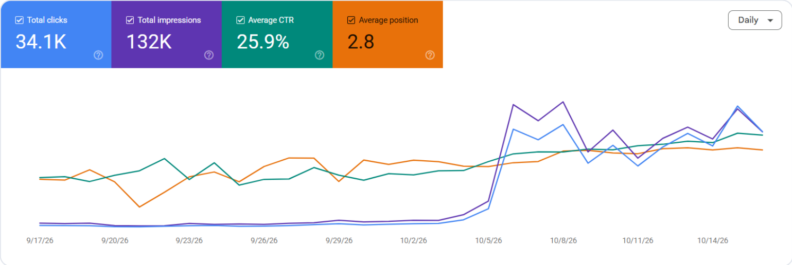

Technical and on-page SEO for the Volleyball Champions League, a new sports league, so it ranks first for its own fixtures, teams, scores and news.

Google Search Console · Web · from 17 Sep 2026.
| Channel | Share | Sessions | Share | Engaged | Avg time |
|---|---|---|---|---|---|
| Organic Search | 34,374 | 88.2% | 72.92% | 1m 02s | |
| Direct | 2,514 | 6.5% | 66.51% | 56s | |
| Organic Social | 1,608 | 4.1% | 49.19% | 21s | |
| AI Assistant | 477 | 1.2% | 67.51% | 48s |